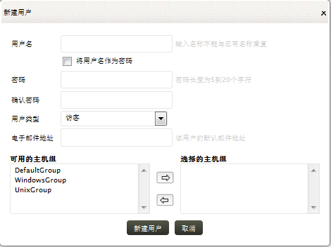
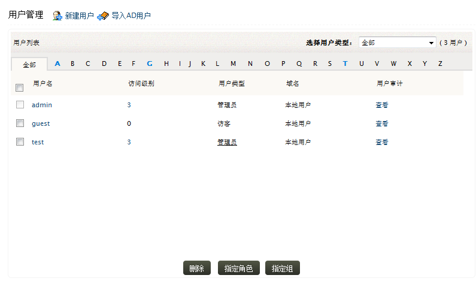
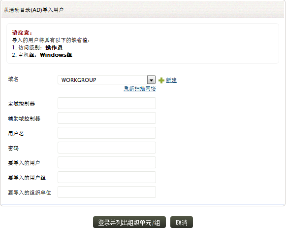

管理用户
EventLog Analyzer支持本地级别和第三方（如活动目录和RADIUS服务器）的认证和授权，您可以添加三种类别的帐户，即管理员、操作员和访客帐户。管理员帐户具有完整的EventLog Analyzer操作权限，操作员则被限于在关联的资源上执行创建、删除操作，访客帐户只能查看关联的资源。
请查看以上主题，了解如何从用户管理面板添加用户、从活动目录导入用户，以及RADIUS服务器认证。
怎样添加一个新的EventLog Analyzer用户？
要添加新的用户，可通过以下菜单实现：
设置页签 > 管理设置：管理用户：添加 >
新建用户
此时，新建用户窗口将会弹出

-
输入用户名称。
-
登录名称也可以作为密码使用，如何设置使用，那么用户将会被提示按他们的选择设置密码。对于临时用户或评估功能时，可以使用这个功能，但是对于正常使用，我们不推荐使用它，这可能会出现安全威胁的问题。
-
输入密码。请按行业标准设置密码，密码长度应在5到20个字符之间，可包含大小写、数字和特殊字符。在验证密码字段再次输入密码，以便确认密码，避免因密码出现的错误或问题。
-
选择访问级别，它包括管理员、操作员和访客。
-
输入用户的电子邮件地址，以便发送用户帐户创建通知。
-
为用户指派主机组，在资源安全上限制用户权限。从可用的组选择组，并移动到选择的组。
-
点击添加用户按钮完成用户的创建步骤。
点击 X 图标来关闭添加用户窗口。
怎样管理EventLog
Analyzer用户（删除、指派角色、指派组）？
要管理EventLog Analyzer用户，可通过以下菜单实现：
设置页签 > 管理设置：管理用户：所有用户
在用户管理界面将会列出所有EventLog Analyzer的用户，以及对应的用户名、可访问的主机组、访问级别、用户所属的域以及查看用户审计信息的链接。

-
点击新建用户可以添加一个新的用户来访问EventLog Analyzer。
-
点击导入AD用户链接，可以从活动目录用户导入到EventLog Analyzer。
-
可以通过用户类型查看用户，您可以选择管理员、操作员或访客。
-
查看对应用户的审计信息。
-
选择用户对应的复选按钮，执行删除、重新指派角色或主机组操作。
-
点击删除按钮会删除所有从列表中选择的用户。
-
重新为用户指派角色，您可以选择：访客、操作员或管理员。
-
重新为用户指派主机组。
怎样将活动目录中的用户导入到EventLog Analyzer？
要从活动目录添加用户，可通过以下菜单实现：
设置页签 > 管理设置：管理用户：导入AD用户 >
用户管理：导入AD用户
设置页签 > 管理设置：外部认证设置 > AD导入计划/开启 >
导入用户：导入用户
从活动目录导入用户弹出窗口

-
选择要导入的用户所在的域，如果这里没有显示出域，可点击重新扫描网络来重新发现域，或者使用新建链接来添加一个新的域。
-
设置主域控制器和备用域控制器，如果还有其他备用的域控制器，可使用逗号进行分隔输入。
-
输入域控制器的用户名和密码。
-
如果您只想要导入指定的用户，请输入用户的名称，多个输入请使用逗号进行分隔。
-
如果您只想要导入指定的用户组，请输入用户组的名称，多个输入请使用逗号进行分隔。
-
如果您只想要导入指定组织单位下的用户，请输入组织单位的名称，多个输入请使用逗号进行分隔。
-
点击登录并列出OU来获取域中的组织单位。
|